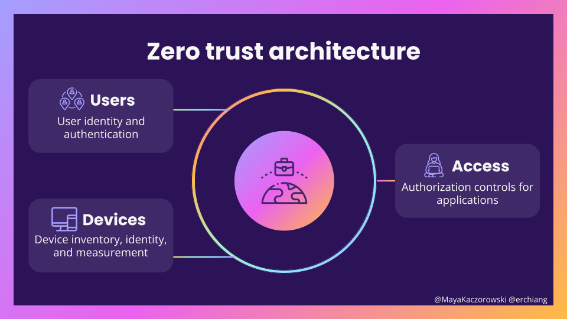
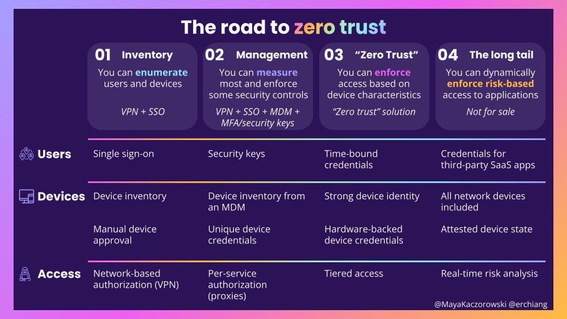

This blog post is a written version of a talk that Eric and Maya gave at NorthSec in 2022. You can also watch the recording and get the slides. This blog post is also cross-posted to Maya’s blog.
We put together the material for this post in 2022 during the peak of the zero trust hype cycle when RSA show floor booths, marketing materials, analyst reports, and even a US executive branch memorandum couldn’t stop talking about zero trust. Though the cycle’s moved on — to “AI-powered security”— it doesn’t feel like zero trust has necessarily progressed. Have we successfully adopted zero trust, and baked these principles into our industry? Or have we thrown a few identity aware proxies on the problem and called it a day?
A few years on, we still struggle to agree on what “zero trust” means, much less how to implement it. If you’re on a journey to zero trust, how far have you gotten in the past few years? And, how much further do you have to go?
What is a zero trust architecture?
A zero trust architecture is a security model that requires every user and device proving trustworthiness at every access attempt — essentially, treating every access as potentially untrusted until proven otherwise.
Traditional network architecture relied on a network perimeter to delineate between trusted and untrusted users: trusted employees inside a firewall, vs. untrusted parties outside of it. By moving to a zero trust architecture, the location of an individual, specifically, which network they are on, is no longer what determines whether the individual is trusted, but other context is used to determine whether they can access a given application. There is no longer such a thing as a privileged, physical, corporate network.
BeyondCorp, first introduced in a 2014 paper, is Google’s original, specific implementation from which the broader generalized set of principles for zero trust architecture emerged.
A zero trust architecture is made up of users, devices, access
A zero trust architecture asks how users gain access to corporate resources — for example, how a new sales manager on their Macbook might gain access to an internal wiki. Authorization considers the user and the device they’re using in order to make a determination about access:

- Users: Who is connecting to your resources? Your users are your employees who need access to corp services. You need to figure out how they authenticate, what kinds of credentials they can use, and how you’re going to manage group membership.
- Devices: Where are they connecting from? You need to decide what kinds of devices you’re okay with accessing your resources (a corporate issued laptop, a personal phone, etc.), and the minimum security of a device (device management, patch level, etc.). (See also Maya’s rant on device trust in zero trust architectures.) A user’s credential is only as secure as the device that that credential resides on.
- Access: Should this user and device pair have access? The mechanics are the hard part here. A simple case like accessing an internal website might just require an SSO proxy with an allowlist of users, while SSHing to a prod machine will be more involved.
Note that we’ve intentionally left out networking — it’s not a critical component of a zero trust architecture, and not part of the access decision. Which network you’re on (including if you’re on the corporate VPN or not) isn’t used to make a decision — a decision is made entirely based on user and device.
The road to zero trust
To understand how far along you are in getting to a zero trust architecture, we’ve put together a maturity model. This is less of prescriptive guidance of what you should do when, and more of a realistic way to help you evaluate where you are today, and what’s left.

As your adoption improves, from left to right, your organization has more capabilities in terms of how it secures its users, devices, and access to applications:
- Level 1: Inventory. You’re treating a VPN as the access control point for the applications on your network. You can enumerate users and devices — you’re using an SSO to inventory users, and have a manual way to list devices. These are table stakes IT and security capabilities.
- Level 2: Management. You have per-service authorization that lets you segment access to specific applications, for example by using a proxy. You can measure most and enforce some security controls. You use a VPN for your network, and MDM to track and measure your devices, and your users use SSO and MFA, ideally security keys. This is where most security-focused enterprises are today.
- Level 3: “Zero Trust”. You’re all in on and aligned to what the market believes is a zero trust architecture — and maybe you’ve even bought a solution that bills itself as zero trust! You can tier users and devices based on measurements, and enforce tiered access to applications based on those characteristics. This is what we typically see called “zero trust” in the market today.
- Level 4: The long tail. This is what many aspire to, and think they’re being sold, but no one has yet to fully achieve. You want to be able to dynamically enforce risk-based access to applications. There’s a long tail of user, device, or access issues, such as SaaS apps, that make this very hard to get right today.
Let’s dive into more detail about what your organization’s controls look like at each level.
Level 1: Inventory
At this level, you have an inventory of your users and devices.
You have a way to enumerate users, most likely through a centralized identity provider and single-sign on (SSO). This is typically tied to your HR information system, so when a new employee joins, changes teams, or leaves, their identity can easily be updated. Unfortunately, a lot of SaaS tools charge you extra for the ability to use SSO with their application (the SSO tax); or sometimes even more for the ability to enforce SSO.
You have a device inventory (maybe a spreadsheet maintained by IT), and some minimal management of devices, such as network credentials. This can be complicated if you allow employees to access resources on their personal devices, have a mix of operating systems, or need to support mobile devices.
You use a flat, traditional network, where if you’re on the network, you’re trusted — just like with a traditional VPN. You know and ideally can control which users and devices can access the network, even if provisioning is manual. But, you’re not segmenting users and devices within your network.
If you’re only dealing with corporate devices, and only self-hosted applications, a VPN plus SSO is a good initial set of tools to limit access to your internal applications.
Level 2: Management
At this level, you can measure most, and enforce some, security controls. You’re moving beyond basic enumeration of your users and devices, and into hardening.
Your users have more secure authentication methods — specifically, hardware security tokens and WebAuthn. (Please, just use security keys.) You have some differentiation between users based on properties (usually group membership) to allow for effective role-based access control. This ties into your HR system to get updated information on a user’s role. You are also able to create groups based on organizational hierarchy (e.g., everyone in sales).
Your devices run a mobile device management (MDM) solution or similar capability, and you can enforce basic actions like remote wipe. You also have a way to measure properties such as OS patch level. Open source tools like osquery make this easy. Devices are identifiable through per-device credentials to tie them back to inventory during access decisions.
You’ve moved from a binary access decision based on whether an individual is in your organization, to per-application authorization with role-based controls. It’s easier to maintain these controls if they’re centralized, rather than built into each internal application separately — which typically means an L7 proxy for browser-based traffic, and a different strategy, like a jumpbox, for SSH-based developer traffic.
Level 3: “Zero Trust”
At this level, you can enforce access based on device characteristics.
Beyond securing only user logins, you’re also taking into account derived credentials like SSH keys, browser cookies and access tokens, which are often less well protected than a user login. A strong login with SSO and a security key isn’t as useful if the user then generates a powerful, never-expiring API token that ends up in a git repo. You’re limiting potential unauthorized access with shorter session policies for Cloud CLIs, and restrictions on OAuth applications on corporate services.
In addition to measuring when devices are out of policy, you enforce access based on these characteristics. So, you are requiring patching of a device for access to your resources, or forcing periodic reboots of devices. The issuance of device credentials are authenticated using a hardware-based identity: a TPM or a platform-specific implementation like Android’s Strongbox, or platform APIs like Apple’s Managed Device Attestation.
And finally, you move from having access solely based on the user, to tiered, or differentiated, access. Tiered access is based on device state: a personal vs. a corporate device, patch level, and compliance with security configuration requirements. Individual devices can “lose trust” and access rights based on inventory properties, like failing to apply an update timely.
You’re really doing zero trust now.
Level 4: The long tail
At this level, you can dynamically enforce dynamic, risk-based access to all of your applications, for all of your users, on all of your devices. For example, you can change access requirements on the fly based on risk, like requiring users to re-authenticate.
– reality check –
That’s not real.
This is where it really goes to shit. There’s a long tail of things that are either hard to get right or not yet solved, which make it effectively impossible for a normal organization to completely adopt a zero trust architecture: SaaS applications, truly risk-based access, device state, and all the random devices on your network. There are always exceptions in security — so the problem becomes, how do we deal with these exceptions?
SaaS applications
Applications that you can’t put behind a proxy are hard to control access to. How do you put Salesforce behind a proxy? SaaS apps generally only provide SSO as a means for delegating access to your company. If you’re lucky, there might be an API for syncing groups for role based authorization. Third-party device authentication is effectively unsupported by the industry.
One workaround for dealing with SaaS apps is to peer them to your network, so that ingress traffic to the app is only allowlisted for your corporate network’s IP ranges. So for an employee to access an app like Workday, they need to pass their traffic through your corporate network, out the other end, and on to the application.
In addition to being slow, this solution is a step backwards from what we’re doing with zero trust — it assumes your network is flat, and if someone is on your network, then can now access this application.
Risk-based access
The dream is to have nuanced authorization decisions based on risk. The failure mode is to overfit the model, and fall to the temptation of having too many tiers. If every application in your environment has its own set of requirements, it’s hard to standardize and even harder to debug why someone may or may not have access to an application.
Ever more fine-grained requirements will demand more of your access infrastructure. A bug tracker will need per-bug permissions. An admin panel may need just-in-time authorizations to permit support staff to debug the specific account they’re assigned to.
And, the more you rely on specific measurements, the more the lack of formalized APIs becomes apparent — did half of your employees really fail to apply a patch, or did macOS tweak its naming convention again?
Device state
Device state is useful for making an access decision — however, it’s self-reported by the device. When your device has been compromised, it starts lying to you. Trusted boot and device state attestation are meant to help you detect when this has happened — these work much better for closed ecosystems (like macOS), and are much more complex for open ecosystems with multiple vendors (like Windows).
Device state goes completely out the window as soon as you have to provide access to devices managed by another organization. If you’re large enough, you may be able to require use of a managed device by the vendors.
Network devices
Your corporate network has a lot of legacy devices that don’t meet your Level 3 security controls — like printers. Printers don’t have secure boot. Your MDM probably can’t manage your printer. The easiest way to set up your printer is with a fixed IP address. It’s still a device on the network, and you want to be able to manage access to it in the same way as my other network devices, but you can’t. Existing networks with legacy devices will have a harder time here — maybe if you’re at a startup, and you’re trying to adopt a zero trust architecture, you can just not have a printer.
So, ignoring our long tail of complications, what would the ultimate level of attaining zero trust look like?
– back to regularly scheduled content –
You have a decent way to manage users and user access to SaaS applications, and correlate logs for when users accessed those applications. There are only really two partial solutions today: either host everything yourself, which you see becoming more common with larger infrastructure tools with on prem solutions; or just be Google or Microsoft and use your single sign-on to access everything.
In terms of legacy devices, your zero trust architecture includes all of the devices you have in your corporate network — because they’re all a point of entry to the network. Usually, the easiest way to address this long tail of devices is to move them off the corporate network, instead of making sure they meet the requirements they need to be on it.
And lastly, with all of that information about users and devices, you can make real-time access decisions that aren’t just rule-based, but that change based on what you know, quickly enough that the user doesn’t notice or get frustrated. This isn’t easy.
Zero trust is a continuous journey
The wrong takeaway of this blog post is to treat the levels like a checklist — but, if that’s what you’re looking for, and you’re at the very beginning of your zero trust journey, take this as directional guidance on where you’re headed.
The reality is that zero trust is never “done” — it’s a continuous journey (and the friends you make along the way). You should consider what’s right for the risk your organization is facing — it might not be worth it for you to reach the top level. Focus on the core components of a zero trust architecture — users, devices, and access — and what you can do to improve in each area, regardless of where you’re starting.